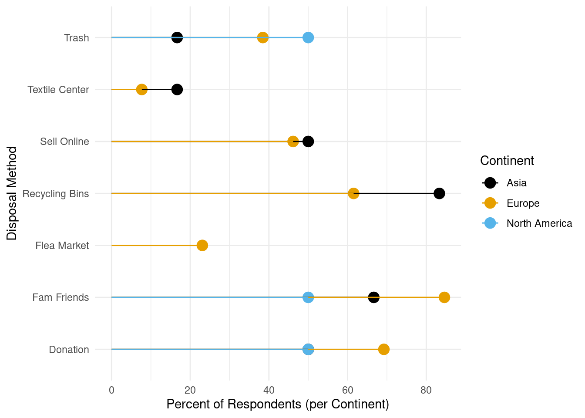

Circular fashion is becoming increasingly important as fast fashion industries and incorrect clothing disposal methods are damaging the environment. This report aims to analyze the clothing purchasing and disposal habits of ETH Zurich members and make suggestions on how best promote circular fashion at ETH.
Methods
3-5 sentences
Data was collected using a survey questionnaire created in Google Forms, which included questions about demographics (age, gender, education, income, continent of origin), environmental awareness, clothing purchasing habits, and clothing disposal practices. All clothing purchasing and disposal questions were dichotomous choice questions (yes or no). Responses were gathered in two ways: (1) via a link shared on WhatsApp with ETH students, and (2) through a QR code distributed to ETH members on Polyterrace over a one-hour period. A total of 20 responses were recorded, and the raw data was exported to Google Sheets. Data cleaning and analysis were conducted in Quarto using R scripts.
Results
Each figure/table has 2-3 sentences of interpretation
Study limitations
Convenience sampling and size of response pool may affect the generalizability of results. Proportions of respondents in each income bracket and continent of origin were not controlled.
Table 1 displays key summary statistics from the survey. On average, respondents purchased 6.4 new clothing items in the last semester and demonstrated a relatively high level of environmental consciousness, with an average score of 3.3 on a 0–5 scale (0 = not at all environmentally conscious, 5 = extremely conscious). The average share of second-hand clothing purchases was 36.9%, though this varied widely — some respondents reported 0%, while others reported as high as 87.5%, suggesting significant diversity in purchasing behavior.
Table 1: Summary Statistics of Key Survey Variables
Variable
Mean
Median
SD
Min
Max
New Items Purchased
6.40
4.00
7.13
2.00
30.00
Environmental Consciousness
3.33
3.00
0.58
2.00
4.00
Percent Second-Hand Purchases
36.90
37.50
34.57
0.00
87.50
Before examining respondents’ purchasing and disposal habits in detail, it is equally important to understand why these actions are taken and what the key motivators are. Figure 1 highlights the most common motivations behind second-hand clothing purchases, as well as the primary reasons respondents choose to dispose of clothing. Interestingly, the majority of participants reported choosing second-hand clothing for its style and uniqueness, rather than for economic or environmental reasons. This suggests that among ETH members, vintage or second-hand fashion is seen as desirable and fashionable, rather than simply practical. On the disposal side, most respondents indicated they part with clothing only when it is damaged or worn out, reflecting a more sustainable attitude in which garments are kept until the end of their useful life, rather than discarded due to changing trends. This aligns with research showing that shifting fashion norms are helping drive the popularity of second-hand clothing among younger, educated populations {}.
library(tidyverse)library(patchwork) # for combining plots# Count motivationsmotivation_plot <- data %>%count(motivation) %>%ggplot(aes(x =fct_reorder(motivation, n), y = n)) +geom_col(fill ="#56B4E9") +coord_flip() +labs(title ="Motivations for Purchasing Second-Hand",x =NULL, y ="Number of Respondents") +theme_minimal()# Count disposal reasonsdisposal_reason_plot <- data %>%count(disposal_reason) %>%ggplot(aes(x =fct_reorder(disposal_reason, n), y = n)) +geom_col(fill ="#E69F00") +coord_flip() +labs(title ="Reasons for Disposing of Clothing",x =NULL, y ="Number of Respondents") +theme_minimal()# Combine them stackedmotivation_plot / disposal_reason_plot
Figure 1: Motivations and Disposal Reasons in Clothing Consumption
Figure 2 explores the effect of income level on clothing acquisition methods. Thrift and vintage stores were widely used across all income groups, highlighting the growing normalization of second-hand fashion. As researcher Ivana Markova from San Francisco State University notes, thrifting has evolved into “a lifestyle for consumers of the urban city”, reflecting a cultural shift that extends beyond economic necessity. However, respondents with a monthly income above 3000 CHF were the only group that did not participate in clothing swaps, and they showed less reliance on hand-me-downs compared to lower-income groups. This may suggest that older members of ETH, such as PhD students or faculty, are less engaged with circular fashion practices due to reduced exposure — for example, they may be less likely to see swap flyers on campus or hear about events through peer networks.
Figure 3 shows disposal habits by respondents’ continent of origin. North American respondents did not report using clothing recycling bins or textile recycling centers, which may suggest lower awareness of textile recycling infrastructure. In contrast, respondents from Asia were least likely to dispose of clothing via regular trash, potentially indicating greater awareness of textile waste or cultural practices influenced by the region’s prominent role in the global textile industry. This aligns with global findings, where China stands out for its progress in circular economy efforts, while the USA struggles to translate awareness into action {Gonella}.
# Reshape disposal method columns to long formatdisposal_long <- data |>pivot_longer(cols =starts_with("disposal_"),names_to ="method",values_to ="response") |>filter(response =="yes")# Clean method labelsdisposal_long$method <- disposal_long$method |>str_replace("disposal_", "") |>str_replace_all("_", " ") |>str_to_title()# Count total number of respondents per continentrespondents_per_continent <- data |>group_by(continent) |>summarise(n_total =n(), .groups ="drop")# Count yes responses per disposal method per continentlollipop_data <- disposal_long |>group_by(continent, method) |>summarise(n_yes =n(), .groups ="drop") |>left_join(respondents_per_continent, by ="continent") |>mutate(percent = (n_yes / n_total) *100)# Plot lollipop chartggplot(lollipop_data, aes(x = percent, y = method, color = continent)) +geom_point(size =4) +geom_segment(aes(x =0, xend = percent, y = method, yend = method)) +labs(x ="Percent of Respondents (per Continent)",y ="Disposal Method",color ="Continent" ) +theme_minimal() +scale_color_colorblind()

Figure 3: Disposal Habits by Continent
# Create data frame with each disposal method and initialize percentagedisposal_habits_df <-data.frame(disposal_method =c("Donate", "Flea Market", "Family & Friends","Sell Online", "Recyling Bins", "Regular Trash", "Third Party Textile Recycling"),disposal_percentages =numeric(7))# Calculate percentage of respondent's disposal habits and assign to correct place in data framedisposal_habits_df[1, "disposal_percentages"] <-sum(data$disposal_thrift =="yes") /count(data) *100disposal_habits_df[2, "disposal_percentages"] <-sum(data$disposal_flea_market =="yes") /count(data) *100disposal_habits_df[3, "disposal_percentages"] <-sum(data$disposal_fam_friends =="yes") /count(data) *100disposal_habits_df[4, "disposal_percentages"] <-sum(data$disposal_sell_online =="yes") /count(data) *100disposal_habits_df[5, "disposal_percentages"] <-sum(data$disposal_recycling_bins =="yes") /count(data) *100disposal_habits_df[6, "disposal_percentages"] <-sum(data$disposal_trash =="yes") /count(data) *100disposal_habits_df[7, "disposal_percentages"] <-sum(data$disposal_textile_center =="yes") /count(data) *100
# Create data frame with each purchasing method and initialize percentagepurchasing_habits_df <-data.frame(purchasing_method =c("Thrift", "Hand-me-downs", "Clothing Swaps","Gifts", "Make Clothing"),purchasing_percentages =numeric(5))# Calculate percentage of respondent's purchasing habits and assign to correct place in data framepurchasing_habits_df[1, "purchasing_percentages"] <-sum(data$get_thrift =="yes") /count(data) *100purchasing_habits_df[2, "purchasing_percentages"] <-sum(data$get_hand_me_down =="yes") /count(data) *100purchasing_habits_df[3, "purchasing_percentages"] <-sum(data$get_swaps =="yes") /count(data) *100purchasing_habits_df[4, "purchasing_percentages"] <-sum(data$get_gifts =="yes") /count(data) *100purchasing_habits_df[5, "purchasing_percentages"] <-sum(data$get_make_clothes =="yes") /count(data) *100
# Calculate how many respondents purchase new clothes brand_sust_filtered <- data |>filter(!is.na(brand_sust))new_clothes_df <-data.frame(buyers_percentage =numeric(1),brand_sust_percentage =numeric(1))new_clothes_df[1, "buyers_percentage"] <-sum(data$new_clothes =="yes") /count(data) *100new_clothes_df[1, "brand_sust_percentage"] <-sum(brand_sust_filtered$brand_sust =="yes") /count(brand_sust_filtered) *100
Conclusions
Second-hand shopping is becoming increasingly popular amoung all income groups
Higher income individuals are less likely to participate in clothing swaps and recieve hand-me-downs
North Americans lack education over proper clothing disposal habits
![]()